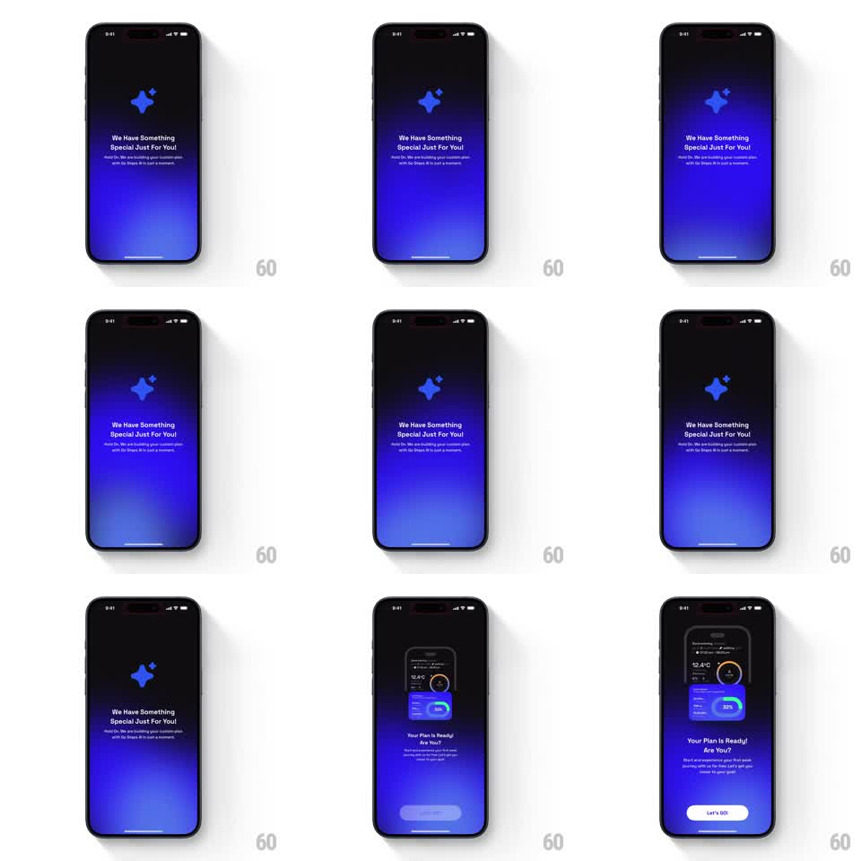

Media
Frame-by-frame

Rebuild this animation 1:1: GO Club's AI plan loading - a dark blue gradient screen where the flame logo pulses over "We Have Something Special Just For You!" copy, then transitions into the personalized plan dashboard card with a "Let's GO!" button.

Rebuild this animation 1:1: GO Club's AI plan loading - a dark blue gradient screen where the flame logo pulses over "We Have Something Special Just For You!" copy, then transitions into the personalized plan dashboard card with a "Let's GO!" button. ## Integration Integration: stack-agnostic spec - springs given as stiffness/damping, timed motions as duration + curve; map every value to your framework and animation library of choice. ## Scene Dark screen with a deep blue radial glow rising from the bottom. Loading state: centered blue flame logo, headline "We Have Something Special Just For You!", small subcopy about building a custom plan. Ready state: a mini dashboard card (weather chip 12.4C, progress ring at 33%, stat rows), headline "Your Plan Is Ready! Are You?", subcopy, white "Let's GO!" button. ## Motion spec Pattern: pulsing loader -> content reveal, ~2s loading minimum. - The flame logo breathes (scale 1 -> 1.08 -> 1, 1.8s, ease-in-out) while the bottom glow pulses its radius and opacity (0.5 -> 0.8, same cycle). - Subcopy fades in 200ms after the headline. - On ready: logo and loading copy fade out and drift up 20px (300ms); the dashboard card slides up from below and scales 0.9 -> 1 (450ms, spring ~300/20); "Your Plan Is Ready!" headline and button fade in staggered (150ms apart). - The background glow never cuts - it persists across both states. ## Calibration - The pulse cycle keeps running until the exact frame the reveal starts; freezing mid-breath reads as a hang. - Card entrance has a soft overshoot; a plain ease-out reads as a system sheet. ## Reduced motion Loading copy crossfades to the ready state (300ms); no pulse. ## Don't miss - The glow is the continuity element between loading and ready - keep it identical in both states. - The button appears last; showing the CTA before the card invites a tap on an empty screen.